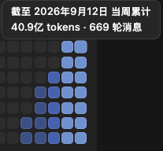

2026 — Now
股宇宙 APP · Android Engineer
Android · 投资工具
财富在线旗下股票投资工具，Kotlin + Jetpack Compose 构建，Material 3 设计体系；探索 KMP 跨端与 AI 能力在投资工具中的落地。
Android Engineer — 与 AI 协同进化的应用架构师。
不再是单纯的代码编写者，而是把工程、创意与智能织进产品里。
财富在线旗下股票投资工具，Kotlin + Jetpack Compose 构建，Material 3 设计体系；探索 KMP 跨端与 AI 能力在投资工具中的落地。
用内网 qwen-image-2.0-pro 生成 26 张可爱风素材（主视觉/20 张透明家具俯视图标/5 种无缝地板），把装修设计工具从工程图纸变成娃娃屋——后来娃娃屋里还住进了猫。附批量风格一致提示词与边界泛洪去底脚本。
扒闭源原作反推架构：Worms 式掩码+画布双层地形、DOM→像素排版、公共代理全军覆没实测、出生龛与击杀顿帧。试玩：bayshier.github.io/destroy ↗ · 源码：bayshier/destroy ↗
从一只消消乐长成六游戏合集 + 猫咪图鉴：113 行公共代码实现统一钱包、日期哈希每日挑战、跨游戏图鉴解锁；消消乐 2.0 新增 L 形炸弹、马里奥跑入式补位与 KFC 疯四主题弹窗。
AI 编程助手本周用量：4,000,000,000 tokens used this week——"与 AI 协同进化"不是口号，是账单级的火力证明。

一条 Jenkins 流水线跑完 Android 签名→蒲公英→鸿蒙签名→AGC→GitHub Pages 下载页更新。Playwright 无头过蒲公英验证码、tkinter 弹窗让签名密码不进脚本不进日志，一次提交双端齐发。
GitLab Webhook → Jenkins 自动打包 → 蒲公英上传 → 企业微信双群通知，全程无人工。打包正确性三件套（强制检出/merge 跳过/同分支去重）与 12 个实战踩坑解法，附改配置的运维 SOP。
股宇宙知识库旗下：2456 题题库（2019-2024 六年真题 + 章节练习 + 考前冲刺，含解析）+ 24 篇知识点全文，间隔复习与薄弱雷达，本地离线可用。
Kotlin 参考实现五个组件：OODA 循环与 token 护栏、fail-closed 沙箱接缝、git 版本化的自进化 Skill、任务 DAG、诚实边界。附 macOS 26 sandbox-exec 实测翻车现场。
用 kline-vision 渲染宇树上市4日真实K线并让视觉大模型判读：断头铡刀、瀑布线。头肩顶/W底/旗形 3/3 盲测全对，附标签由构造保证的评测集与 T+1 回放引擎。
看懂 A股的 kline-mcp + 操控安卓的 android-mcp：架构决策，和那些搜索引擎搜不到的坑——TLS 指纹拦截、会撒谎的容灾、11 字节的截图。
kline-mcp、android-mcp、android-agent-skills、Compose-MVI-KLine——个人开源项目与代码仓库，持续更新中。